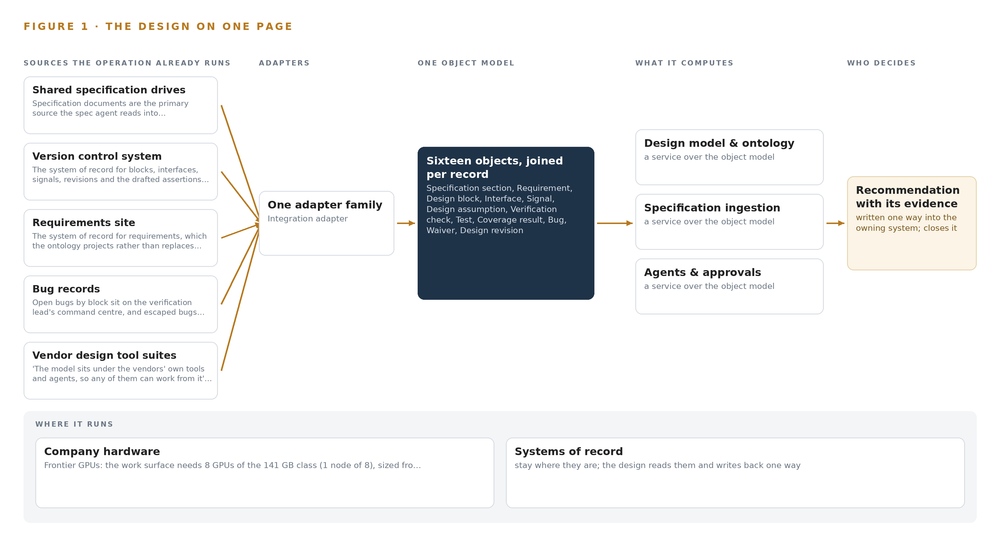
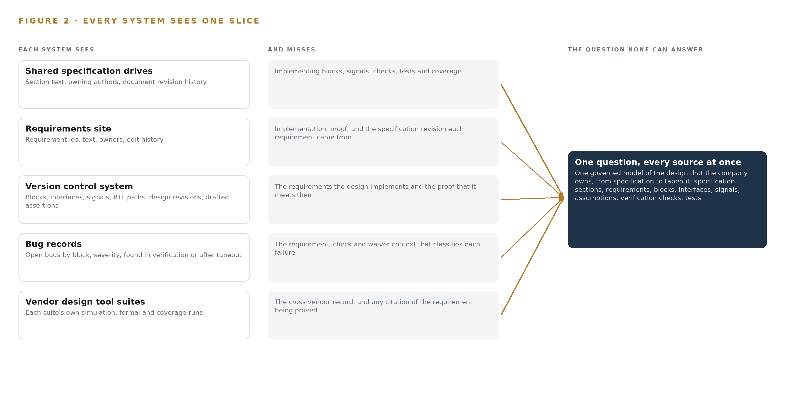
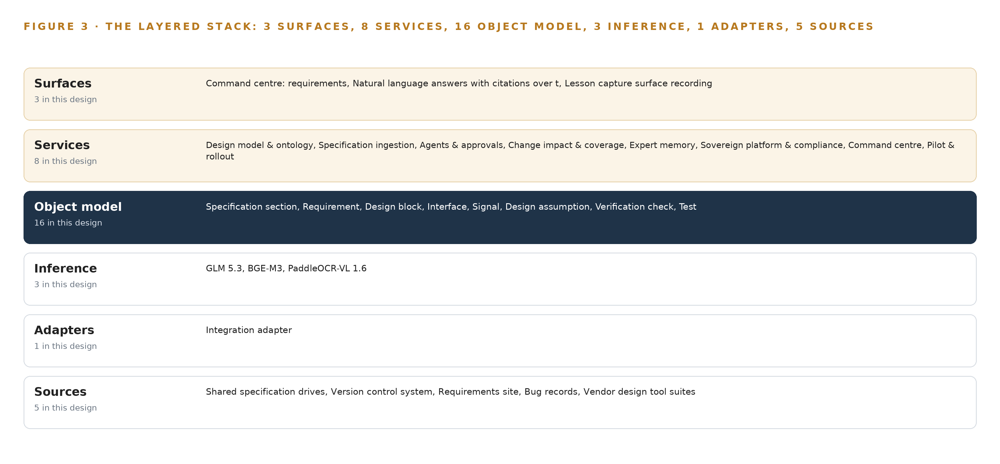
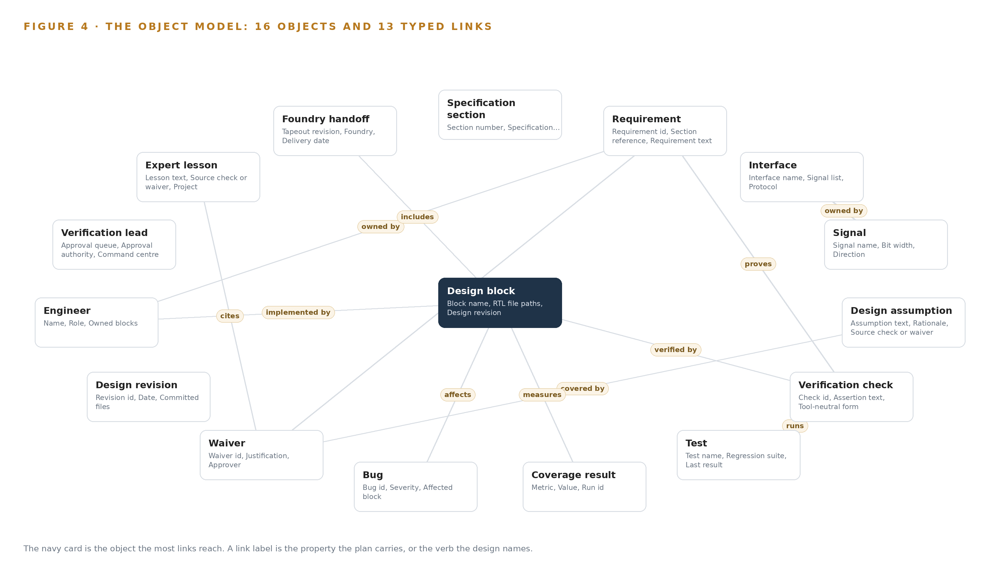
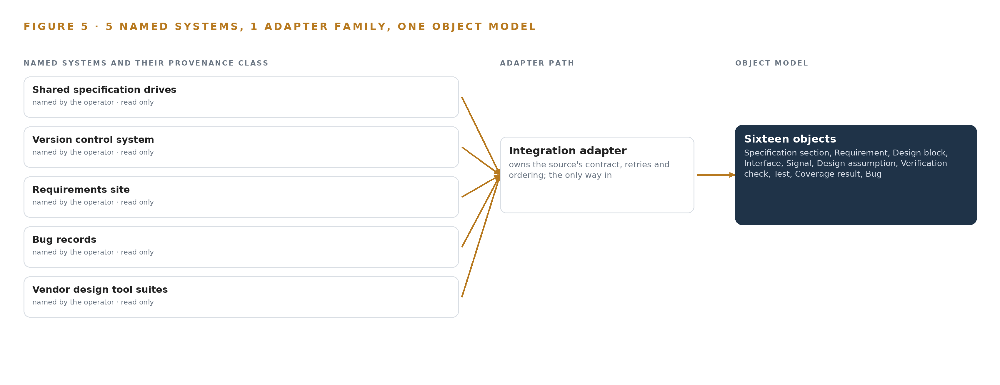
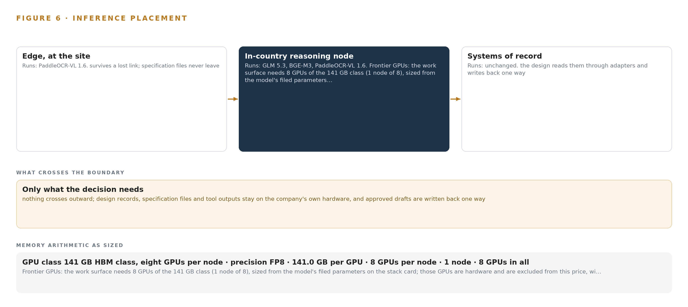
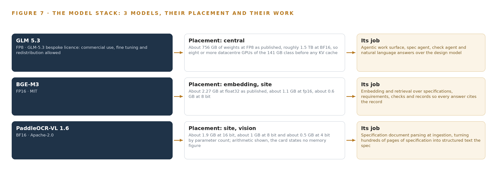
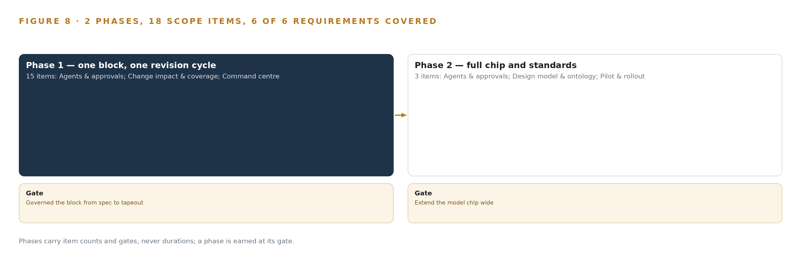
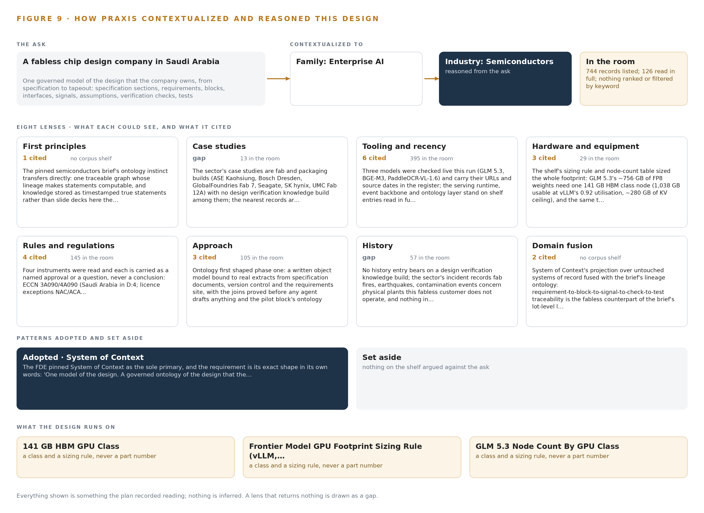

Silicon Ledger: Ontologies for Semiconductor Design From Specification to Tapeout
One governed, self-hosted model of a Saudi fabless chip company's design record that traces every requirement to what implements it and what proves it, with agents that draft and engineers who decide.
For the verification lead, the design and methodology leads, and the platform, data and agent engineers who would build and run it.
Vertical-Driven Architectures is a CodeNinja series of system designs. Every design in the series is driven by a real-world problem and scenario in a single industry, and every one is designed on Praxis, CodeNinja's platform for designing physical AI systems. Operations are described by class, never by name.
Silicon Ledger: Ontologies for Semiconductor Design From Specification to Tapeout in Saudi Arabia
What this is. An open reference architecture for system design in physical AI, built for a fabless chip design company in Saudi Arabia that designs silicon in vendor design tool suites and hands tapeouts to an outside foundry, where owning the inference node that runs it costs about 569,000 US dollars over three years. Every requirement is traced to the block, interface and signal that implement it and to the check, test and coverage result that prove it, so the verification lead can ask which requirements have no proof and what one interface change on one block actually touches. The model runs entirely on the company's own hardware under the kingdom's data protection law, export control on the GPU node and trade secret law. It is written for the verification lead, the design and methodology leads, and the platform, data and agent engineers who would build and run it. The operator is described by class, never by name.
The answer in numbers.
| Part | The design |
|---|---|
| Sources | Five systems, entering through one integration adapter family that stamps every fact with the tool, file and revision it came from: the shared specification drives, the requirements site, the version control system, the bug records and the vendor design tool suites, all read only; the one write is the approval-gated path into version control |
| Object model | 16 typed objects with 13 typed links, from the specification section and requirement through the design block, interface, signal and design assumption to the verification check, test, coverage result, bug, waiver and design revision, with the engineer, verification lead, expert lesson and foundry handoff, published as JSON for reuse |
| Models | GLM 5.3 (bespoke licence, 753B at FP8) for the agentic work surface: the spec agent, the check agent and cited answers; BGE-M3 (MIT) for embedding and retrieval so every answer cites its record; PaddleOCR-VL 1.6 (Apache-2.0) for specification parsing at ingestion; no third party model service, nothing trained into weights |
| Compute | One node of eight 141 GB HBM cards (1,128 GB) in the company's own server room, holding 753 GB of FP8 weights with a 1.2 planning factor, 904 GB, at roughly ten kilowatts; no edge estate. The node is a 4A090 item for a D:4 destination, so a BIS licence determination is a phase one checkpoint, and the platform runs on the company's existing hardware until it lands. Nothing crosses outward |
| Rollout | Two phases carrying 18 scope items (15, then 3) behind one gate: one design block and one specification revision cycle governed from specification to tapeout, with one interface requirement change traced to everything that implements it and everything that proves it; all six stated requirements covered |
| Three-year cost | About 569,000 US dollars to own the node for three years (a range of 541,000 to 594,000: server, support and power at the Saudi commercial electricity tariff), against about 751,000 to rent the same eight cards on the deepest three-year commitment in AWS Middle East (UAE), so ownership costs about three quarters of it, and about 2.00 million on demand, against which ownership costs a little over a quarter. Renting is a price reference only, because AWS lists no Saudi region on the day read and every rented option would carry design records across the border (Appendix A) |
| Human control | Agents draft and engineers decide: an engineer confirms each extracted requirement before it is used, with the rejection rate as a phase one gate; the verification lead approves every drafted check before it enters the regression, escalating to the senior verification expert after five working days; a reconciliation job after every sync cycle flags stale impact lists and keeps them out of citations |
Reuse it. The object model, the model register and the figures are free to reuse under CC BY 4.0. Cite as https://codeatoms.ai/chip-design-ontology-saudi-arabia/ (DOI 10.5281/zenodo.23693146).
Made with. Reasoned on [CodeNinja Praxis](https://codeatoms.ai/praxis/), the CodeNinja Atoms platform for designing physical AI systems. The object model imports into [Hyper Ontology](https://codeatoms.ai/hyper-ontology/), which turns it into a living system. Load it with the [hyper-ontology loader](../hyper-ontology-py/): `hyper-ontology show chip-design-ontology-saudi-arabia`. Both are in beta; access by request.
Ontologies for Semiconductor Design Should Trace Proof, Not Just Text
Ontologies for semiconductor design exist to answer one question that a fabless chip design company in Saudi Arabia cannot answer today: which requirements carry proof, and what does one interface change on one block actually touch? The operator's record is scattered across shared specification drives, a requirements site, a version control system, a bug tracker and the vendor design tool suites, and no one of them joins the rest, so traceability is rebuilt by hand at every revision while a chip specification runs to hundreds of pages and keeps changing; the gaps surface late, as bugs found after tapeout rather than as checks that never existed, in an industry where trade secret theft and research security enforcement have shown what design data is worth (Reuters 2020; Bloomberg 2020).
The design joins five source systems, the shared specification drives, the version control system, the requirements site, the bug records and the vendor design tool suites, through one adapter family of integration adapters into a governed model of sixteen objects carrying the tool, file and revision each fact came from, handed over by eight services onto three surfaces, a command center for the verification lead, a cited conversational interface over the design record, and a capture surface for expert reasoning; three models do the work, GLM 5.3 as the agentic work surface on one node of eight 141 GB HBM-class GPUs on the company's own hardware in Saudi Arabia, BGE-M3 for embedding and retrieval so every answer cites its record, and PaddleOCR-VL 1.6 for specification parsing at ingestion, with no third party model service anywhere in the path.
Part I states the problem and the join failure behind it; Part II sets the constraints, then the stack, the sixteen-object model, ingestion through adapters, inference placement and the models with their licenses; Part III gives the two-phase rollout with its item counts, gates, failure modes and the ownership of what is built; and Part IV closes with how Praxis contextualized and reasoned the design, so that every choice in this paper traces back to recorded reading.

Contents
Each chapter is tagged for the reader it serves most directly: Executive, Team Lead, FDE, Reference.
| Abstract · Ontologies for Semiconductor Design Should Trace Proof, Not Just Text | Executive | |
| PART I · THE PROBLEM | ||
| 1 | Traceability From Specification to Tapeout Breaks Silently | Executive |
| 2 | Every Tool Sees One Slice of the Chip | ExecutiveTeam Lead |
| PART II · THE DESIGN | ||
| 3 | Sovereignty and Vendor Neutrality Shape Everything Downstream | Team Lead |
| 4 | One Stack Runs From Records to the Command Center | Team LeadFDE |
| 5 | Sixteen Objects Turn Design Records Into One Argument | FDE |
| 6 | Every Source Enters Through an Adapter, Never Directly | FDE |
| 7 | All Reasoning Stays Inside the Company's Perimeter | FDE |
| 8 | Licenses Decide What the Company Owns Outright | FDEExecutive |
| PART III · THE ROLLOUT | ||
| 9 | One Block and One Revision Cycle Prove It First | Team LeadExecutive |
| 10 | The Intelligence Stays with the Company That Produced It | Executive |
| PART IV · HOW IT WAS DESIGNED | ||
| Conclusion · A Traceable Design Record the Company Owns | Executive | |
| 11 | Every Choice Traces to Recorded Reading | Team LeadFDE |
| Sources | Reference | |
Traceability From Specification to Tapeout Breaks Silently
A specification change lands in one place while its consequences surface in another, because no system the operator runs holds the requirement, its implementation and its proof together.
The abstract promised one governed model of the design, from specification to tapeout, owned outright by a fabless chip design company in Saudi Arabia and running on its own hardware. Ontologies for semiconductor design are what that promise takes literally, and this chapter states the problem such a model exists to solve: the trace a verification lead needs breaks silently between the tools that hold its pieces, and nobody sees it break.
1.1 The Question, the Data and the Regimes
The question the operation needs answered is narrow and daily: when an interface requirement changes on one block, which signals, checks, tests, coverage holes, open bugs and waivers does that change touch, and which requirements in the affected area have no proof at all. Answering it requires data no single system holds: specification sections and their revisions, requirement records with owners, the blocks, interfaces and signals that implement them, the checks and tests that prove them, coverage findings, bug records, waivers with justifications, and the revision history that binds the whole into a sequence of defensible states. Each fact must carry the tool, file and revision it came from, or the answer is an opinion. The regulatory ground is threefold. The kingdom's data protection law applies because the model holds people's decisions, and an impact assessment under its access provisions runs before go live. Export control applies to the compute itself, since the GPU class the design needs is a licensable item for its destination and a license determination is a named checkpoint. Trade secret law governs the record end to end, in the kingdom and wherever the design might travel, and the European directive codifying protection of undisclosed know-how is the reference regime the industry designs against (Europa 2016).
1.2 The Documented Cost
The cost of this problem has two documented faces. The first is the cost of the record leaving control: a foundry and its engineers pleaded guilty in the United States to trade secret theft and paid a 60 million dollar fine (Reuters 2020), a parallel Taiwanese proceeding fined the same company NT$100 million (Bloomberg 2020), and final sentences were handed down years later to former employees of another chipmaker in a separate leak (Focustaiwan 2026). Those cases are why design data cannot ride a hosted model service, and why the join must be built inside the boundary rather than exported to whoever can compute it. The second face is the cost of the join failing in place: escaped bugs found after tapeout instead of in verification, waivers that expire without anyone noticing, and requirements that reach silicon with no check ever having proved them. Regulators and funding bodies now write these expectations down: the United States commerce department's protection guidebook ties semiconductor funding to research security requirements, including access controls and provenance of technical data (NIST 2024). An operator of this class is expected to know where its design record came from and who touched it.
1.3 The Operation as a Scenario
The operator is a fabless semiconductor company in Saudi Arabia: it designs silicon in vendor design tool suites, verifies through simulation and formal tools, and hands tapeouts to an outside foundry whose relationship stays its own. Its specifications run to hundreds of pages and keep changing, which is the root of the traceability problem. The design reads five named source systems: the shared specification drives, the requirements site, the version control system, the bug records and the vendor design tool suites. Three roles are named in the loop: the verification lead who approves every check before it enters the regression, the design engineers who confirm each extracted requirement before it is used, and a senior verification expert who is the escalation path when the approval queue ages. The physical environment is one place, a design office and the company's own server room on its own premises; there is no fab floor, no cameras and no physical sensing, and the only location that matters is which block and which project a record belongs to. The regulatory ground combines the kingdom's data protection law, the export control determination on the GPU node, and trade secret regimes enforced by courts on three continents against companies exactly this size.
Every Tool Sees One Slice of the Chip
The specification drives, the requirements site, version control, the bug records and the vendor tool suites each hold part of the design record, and the join verification needs exists in none of them.
Chapter 1 stated the question and the documented cost of not answering it. This chapter shows why no system the operator runs today can answer it: each of the five holds one slice of the record, and the join verification needs exists in none of them, as Figure 2 sets side by side.
2.1 One Slice Per System
The shared specification drives hold the specification documents themselves, hundreds of pages revised as files. They see section text, owning authors and the revision history of each document, and they miss everything downstream: no file on a drive says which block implements a section, which signals carry an interface, or which check proves a requirement. The requirements site holds the structured requirement records with ids and owners. It sees the requirement text and its edit history, and it misses the implementation, the proof, and the specification revision and page each requirement was extracted from, so a requirement edited in the site silently diverges from the specification it came from. The version control system holds the design as it is: RTL file paths, blocks, interfaces, signal lists, design revisions, and the assertions the agents would draft. It sees structure and history, and it misses intent, because a commit message carries no requirement linkage and nothing in the tree says what the design is for. The bug records hold open bugs by block with severity and whether each was found in verification or after tapeout. They see failures, and they miss the context that would classify one: whether a bug is a coverage gap, a spec change nobody traced, or a waived check whose waiver expired. The vendor design tool suites each run simulation, formal verification and coverage in their own formats. Each sees its own runs and findings, and each misses the cross-vendor record; no tool's output cites a requirement id, and the vendor-neutral layer that would join them does not exist on any vendor's roadmap, because it is not any vendor's product.

2.2 What None of Them Sees Together
What no system sees is the whole argument: requirement to block to signal to check to test to coverage, each fact carrying the tool, file and revision it came from, with bugs and waivers hanging off the same trace. In practice the cost lands as manual work and late discovery. An interface change arrives and its impact list is assembled by hand across drives, sites and tools, so blocks are missed and the misses surface as escaped bugs found after tapeout, the most expensive kind. Requirements with no proof are invisible until they fail. Waivers age past expiry with no owner alerted. The verification lead cannot answer the daily question without days of cross-referencing, which is exactly the delay a change cycle cannot absorb.
Sovereignty and Vendor Neutrality Shape Everything Downstream
Four goals, design data staying in Saudi Arabia on the company's own hardware, vendor neutrality under the existing design tools, named approvals for every check, and a cheap first gate, are each hard in semiconductors and shape every choice after them.
Chapter 2 showed the join failing across five systems that each see one slice. This chapter states the four goals that shape every choice made after them, each hard in semiconductors for its own reason, and then the scoping decisions and rejected alternatives those goals force.
3.1 Design Data Stays on the Company's Own Hardware
The first goal is sovereignty in the literal sense: specifications, designs and models stay in Saudi Arabia on the company's own hardware, and nothing crosses outward. This is hard in semiconductors because the data is the company's core intellectual property and the industry's record of losing it is a matter of court records, from a 60 million dollar guilty plea (Reuters 2020) and a NT$100 million fine in a parallel proceeding (Bloomberg 2020) to final criminal sentences for leaked process knowledge (Focustaiwan 2026). The practical consequence is that no hosted frontier model service is available at any price, and the compute must be owned: one node of eight GPUs of the 141 GB high bandwidth memory class, drawing roughly ten kilowatts that the company's own facilities team must bear, and licensable under export controls, so the license determination is a named phase one checkpoint before any class is quoted. Funding regimes elsewhere now write such controls into contract terms (NIST 2024), and the operator's own constraint settles the question before it is argued.
3.2 Vendor Neutrality Under the Existing Design Tools
The second goal is that the model sits under the vendors' own tools and agents, so any of them can work from it. This is hard because an EDA estate is a set of vendor suites, each with its own property languages and formats, and a model bound to one vendor's syntax locks the operator into that vendor and breaks the goal. The design therefore drafts tool-neutral assertions into the version-controlled source and runs them in the existing regression, and the integration is the exposure of the ontology beneath the vendors' tools rather than a connector into any one vendor's silo. Each vendor's license terms are confirmed in discovery before its connector is built, because terms that restrict reading a vendor's outputs into a company-owned model would change the design, not the ambition.
3.3 Named Approvals for Every Check
The third goal is that agents draft and people decide: an engineer confirms each extracted requirement before it is used, and the verification lead approves every check before it enters the regression. This is hard because the control is structural, not cosmetic. A misread specification propagates into requirements, checks, coverage and impact lists, and the confirmation step is the only point where the error is caught cheaply, so the engineer rejection rate is a monitored gate signal rather than a courtesy. The bottleneck risk is equally real, since a single approver can age a queue: queue depth and ageing sit on the observability stack, and escalation to the senior verification expert after five working days is the designed relief.
3.4 A Cheap First Gate
The fourth goal is a first gate that can stop the work cheaply. This is hard in an industry where the temptation is to model the whole chip at once. Phase one is one block and one revision cycle, with baseline measures bound before any extension, and the simulated event that proves the design is deliberately small: one interface requirement change on one block. If the model cannot carry that trace end to end with citations, extension to the full chip would only scale the failure.
3.5 Scoping Decisions
Three scoping decisions follow from the four goals, each buying something specific at a stated cost, and Table 1 sets them out. Designs of this shape are still rare among industrial ontology examples precisely because most stop at the document layer and never reach the proof, which is the trade these rows refuse.
| Decision | What it buys | What it costs |
|---|---|---|
| Phase one is one block and one revision cycle | Proof against the operator's own baseline before any chip-wide extension, with a gate that can stop the work cheaply | The model governs one block until the gate passes, so chip-wide questions wait |
| Engineer-confirmed extraction for every requirement | A structural control on misreads before they propagate into checks, coverage and impact lists | Engineer time on every extracted requirement, with the rejection rate monitored as a gate signal |
| Tool-neutral assertions drafted into version control | Any of the vendors' tools can run what the agents draft, and the regression stays the system of record | A maintained translation from the neutral form into each vendor's syntax |
3.6 What the Design Chose Against
Each major choice was made against a live alternative, and Table 2 records the four that matter plus the boundary itself. The last row is the out-of-scope statement, read as a decision rather than a disclaimer: the design models the record from specification to tapeout and supplies none of the tools that make the silicon.
| Where | What was picked | Instead of, and why |
|---|---|---|
| Model serving | Self-hosted GLM 5.3 on one 141 GB class node on the company's own hardware | A hosted frontier model API, ruled out by the operator's own constraint of no third party model service and by design data being its core intellectual property |
| Specification reading | Extraction by the spec agent with an engineer confirming each requirement | Fully automated reading, rejected because a misread propagates into checks, coverage and impact lists and the confirmation step is the control |
| Check drafting | Tool-neutral assertions in the version-controlled source, run in the existing regression | Checks bound to one formal property tool, rejected because neutrality lets any of the vendors' tools run what is drafted |
| Memory | Expert lessons kept as inspectable, citable records with need-to-know partitioning, read before each run | Fine tuning on past verification data, rejected because weights would be neither inspectable nor partitionable and nothing is trained |
| Scope boundary | Design execution, EDA and foundry licenses, hosted model service, training, hardware and historic migration all stay out | A broader build, rejected because the value is the governed record, and the engineers and their tools design, verify and execute the tapeout themselves |
One Stack Runs From Records to the Command Center
Systems of record sit below, one governed object model sits in the middle, and agents, services and surfaces run above it, all inside the company's perimeter with no edge estate and no hosted service.
Chapter 3 fixed the constraints: sovereign on the operator's own hardware, vendor neutral under the existing design tools, an engineer confirming every extraction, and proof on one block before any chip-wide extension. This chapter lays out the stack those constraints produce, because the practical question behind ontologies for semiconductor design is not which component to buy but where each layer sits relative to the systems of record, and the answer here is a deliberately plain shape: records below, one governed model in the middle, agents and services above, with nothing outside the perimeter.
4.1 The Pattern and Why It Fits
The stack runs in three bands, and Figure 3 shows the layered whole with a count on every layer. Below sit the five sources: the shared specification drives, the version control system, the requirements system of record, the defect tracker and the vendor design tool suites, all read-only and all owned by the operator. In the middle sits one object model of sixteen objects with typed links, held in Hyper Ontology v0.9 (Semantics plus Kinetics), which is the only place in the estate where a requirement, the block that implements it and the check that proves it are neighbors. Above it run eight services, three surfaces and three agents, with GLM 5.3 serving every one of them. The pattern fits because the operator's problem is a join failure, and the pattern puts the join in one place that the operator owns and that any vendor's tools can read from beneath their own interfaces. It also fits the published landscape: most industrial ontology examples in this sector concentrate on fab-floor data, and the integration shelf behind them holds connectors for fab-floor systems with nothing for a fabless design estate, so this design builds its connector per source rather than inheriting one. The inference arithmetic keeps the whole stack in one room: GLM 5.3 carries a filed count of 753B parameters at FP8, one byte per parameter, so the weights alone are 753 GB; a single node of eight 141 GB GPUs holds 1,128 GB, leaving 375 GB beside the weights for KV cache and activations against the roughly 151 GB that the 1.2 planning factor reserves. Table 7 carries the layer-by-layer register, with the component, the choice and the reason for every layer the platform prints it against.

| Layer | Component | Choice | Why |
|---|---|---|---|
| Event streaming and messaging | by class, no product named | Product | Apache Kafka 4.3.x (KRaft, three dedicated controllers, dynamic quorum) |
| The ontology or graph store | by class, no product named | Product | Hyper Ontology v0.9 (Semantics plus Kinetics) |
| Time series and telemetry storage | by class, no product named | Not needed | No machine telemetry is in scope: the design consumes documents, requirements and records, and its own service health is carried by the observability layer. |
| Video ingest, recording and management | by class, no product named | Not needed | No cameras: this is a design office engagement with no physical sensing. |
| Edge model serving | by class, no product named | Not needed | No edge estate; all inference runs on the company's own hardware inside the perimeter. |
| On site language model serving | by class, no product named | Product | VLLM |
| Object tracking and trajectory forecasting | by class, no product named | Not needed | No physical objects to track; the traceability in this design is between records, carried by the ontology. |
| Edge orchestration of containers | by class, no product named | Not needed | A single-site rollout on the company's own hardware with no edge nodes to orchestrate; container rollout is part of the platform's own delivery, not an edge layer. |
| An air gapped artifact and model registry | by class, no product named | Product | Harbor (offline installer) |
| Labelling and retraining | by class, no product named | Not needed | Under system of context nothing is trained, fine tuned or distilled into weights for this operator; the agents improve through its memory loops, so no labelling pipeline exists by design. |
| Time synchronisation across sensors and systems | by class, no product named | Not needed | No sensors to fuse; ordering of revisions and approvals is carried by the event backbone's own sequencing and the version control system's commit order. |
| Observability of the running system | by class, no product named | Product | Prometheus v3.15.0, Grafana v13.2.3, Loki v3.7.8 |
4.2 The Stack Stage by Stage
Table 3 walks the same stack stage by stage, from the records the operator already keeps to the surfaces its verification lead actually reads. Two stages are worth naming before the table: the sensing stage exists only to record that nothing physical is sensed, and the adapters stage is the single door through which every fact passes. The stages and their components are set out in Table 3.
| Stage | What it is responsible for | How |
|---|---|---|
| Sources | Holding every record the model must reflect: specifications, requirements, blocks, interfaces, signals, bugs and the vendors' tool outputs | Five operator-owned, read-only systems: the shared specification drives, the version control system, the requirements system of record, the defect tracker and the vendor design tool suites |
| Sensing | Recording the scoping decision itself: a design office with no physical sensing and no machine telemetry in scope | No cameras, no edge estate and no time-series store; the model consumes documents, requirements and records |
| Adapters | Being the only door between the sources and the model, stamping every fact with the tool, file and revision it came from | One integration adapter family, read-only against the sources, with the approval-gated path into version control as the only write |
| Object model | Holding the sixteen objects and their typed links so the lineage from requirement to proof is computable | Hyper Ontology v0.9 (Semantics plus Kinetics), one governed model the operator owns outright |
| Inference | Serving every model inside the perimeter, with no third party model service | vLLM serving GLM 5.3 at FP8 on one node of eight 141 GB GPUs; BGE-M3 for retrieval; PaddleOCR-VL 1.6 for specification parsing |
| Services | Doing the work: reading specifications, drafting checks, computing impact and coverage, keeping memory, holding compliance | Eight services: design model and ontology, specification ingestion, agents and approvals, change impact and coverage, expert memory, sovereign platform and compliance, command center, pilot and rollout |
| Surfaces | Giving the verification lead and the engineers what they read, what they approve and what they record | Three surfaces: the command center over requirements and bugs, the conversational interface with citations, and the lesson capture surface recording expert reasoning |
4.3 A Reusable Pattern
The shape a team carrying a similar brief can reuse is the order of the bands, not their contents. Read-only systems of record sit below; one adapter family is the only door between them and the model, and it stamps provenance on every fact; one governed object model holds the vocabulary of the vertical; agents draft above it, and a named person approves every draft before it becomes a write; every weight runs self-hosted inside the operator's own perimeter. A team swaps the object vocabulary, since sixteen objects chosen for a chip's life from specification to tapeout will not fit a mine or a fleet, and swaps the source list and the model sizing to its own hardware. What it keeps, unchanged, are the three controls that make the model trustworthy rather than merely fluent: the adapter-only door, the approval-only write path, and the reconciliation run after every sync cycle. Those three are independent of industry, and they are the part of this design worth copying first.
Sixteen Objects Turn Design Records Into One Argument
Sixteen objects with typed links carry the lineage from requirement to block to signal to check to test to coverage, so a query can traverse what a document store cannot.
Chapter 4 placed the object model at the center of the stack and put a count on every layer. This chapter opens that center: the sixteen objects, the typed links between them, and the human approvals that stand at the only points where the model is allowed to change.
5.1 Every Object and Its Typed Links
The model holds sixteen objects: the specification section, requirement, design block, interface, signal, design assumption, verification check, test, coverage result, bug, waiver, design revision, engineer, verification lead, expert lesson and foundry handoff. Each is anchored where its record already lives: the specification section in the shared drives, the requirement in the requirements system of record, the design block, interface, signal, verification check, test and design revision in the version control system, the coverage result in the simulation and regression environment, the bug in the defect tracker, and the expert lesson in a kept record of decisions and outcomes that the next decision reads. Figure 4 shows every object and its typed links, with the verification check as the focal object, and Table 8 carries the same register as object, anchor and links. The links are what a document store cannot hold. The simulated event makes this concrete: one interface requirement changes on one block, and a query starts at the changed requirement, walks back to the specification section and the design revision that produced it, out through the linked verification checks that claim to prove it, on to the tests that run those checks and the coverage result each test produced, across to the signals on the affected interface and the blocks that implement them, and finally to the bugs already filed and the waivers that excuse anything still failing. A document store can return pages that mention the requirement; it cannot walk that chain, so it cannot answer the two questions that decide a tapeout: which requirements have no proof at all, and which impact lists were built from a revision the systems of record have since superseded.

| Object | Anchored in | Typed links |
|---|---|---|
| Specification section | The shared drives for specifications | no typed link recorded |
| Requirement | The requirements site | owned by: Engineer |
| Design block | The version control system | verified by: Verification check; implemented by: Engineer |
| Interface | The version control system | lists: Signal |
| Signal | The version control system | owned by: Interface |
| Design assumption | Engineer-entered records | covered by: Waiver |
| Verification check | The version control system | proves: Requirement |
| Test | The version control system | runs: Verification check |
| Coverage result | The simulation and regression environment | measures: Design block |
| Bug | The bug records | affects: Design block |
| Waiver | Engineer-entered records | justifies: Requirement |
| Design revision | The version control system | no typed link recorded |
5.2 The Human Loop and the Hosting Posture
The human loop lives at exactly two points, both named in the requirement and both structural. When the spec agent reads a new specification revision into requirements, an engineer confirms each one before it is used anywhere, and the rejection rate is a monitored signal and a phase one gate rather than a courtesy, because a misread requirement propagates into checks, coverage and impact lists. When the check agent drafts a tool-neutral assertion into version control, the verification lead approves every one before it enters the regression, and queue depth and ageing are watched on the observability stack with an escalation path to the senior verification expert after five working days so one approver cannot become the bottleneck. The hosting posture follows from what the objects hold. Everything runs on the company's own hardware on its own premises in Saudi Arabia; identity is carried by Keycloak; there are no external links, and nothing crosses outward, with Harbor's offline installer governing what comes in as the artifact and model registry. The only write path into the regression is the approval-gated one through version control. That posture is not stylistic: design data is the operator's core intellectual property, and the sector's trade secret record includes criminal findings and a 60 million dollar fine in one case (Reuters 2020) and final Supreme Court sentences in another (Focustaiwan 2026), while research security guidance for funded programs treats exactly this class of asset as requiring documented protection (NIST 2024). Need-to-know partitioning per project and block is enforced in the schema, mirroring the existing tool permissions, with a PDPL Article 25 impact assessment before go live.
5.3 One Object in Its Recorded Form
The verification check is the object where the design's guarantees meet, since it carries the assertion, its tool-neutral form, the requirement it claims to prove, its author and its approver, and a status ladder whose vocabulary, from Drafted through Awaiting approval and Approved to In regression, Failing and Waived, encodes the human loop in the record itself. Its recorded form, as the platform prints it below, shows every property and link.
{ "id": "specification-section", "label": "Specification section", "kind": "document", "anchored_in": "The shared drives for specifications", "properties": [ "Section number", "Specification revision", "Source document and page", "Owning author", "Status" ], "status_vocabulary": [ "Draft", "Released", "Superseded" ], "links": [] }Every Source Enters Through an Adapter, Never Directly
Each of the five source systems is read through the integration adapter family, which stamps every fact with its tool, file and revision and reconciles the model against the systems of record after every sync cycle.
Chapter 5 described what the object model holds and where the approvals sit. This chapter describes how data reaches it: every source enters through the integration adapter family, never directly, and every fact arrives stamped with the tool, file and revision it came from.
6.1 Five Sources, One Adapter Family
All five sources are operator-owned and read-only, and Figure 5 maps each one to its provenance class and its adapter path. The shared specification drives hold the specification documents the spec agent reads; a chip specification runs to hundreds of pages and keeps changing, so every read is versioned against the drive's own state. The version control system is the system of record for blocks, interfaces, signals and revisions, and it is also the destination of the assertions the check agent drafts, which keeps the drafted checks inside the same review machinery as the design itself. The requirements system of record is projected rather than replaced: the ontology reads it and holds the requirements as objects with traceability links, but the operator's system remains authoritative. The defect tracker supplies open bugs by block to the command center, and the escaped bugs found late become one of the baseline measures bound in phase two, after the pilot proves the model. The vendor design tool suites are integrated by exposure rather than connection: the model sits under the vendors' own tools and agents, so any of them can work from it, which is what vendor neutrality means in practice. Phase one reads only the files and repositories the operator already owns, fixed at intake, which keeps the first gate cheap.

6.2 What the Adapter Tier Guarantees
The adapter tier guarantees three things. First, provenance: every fact carries the tool, file and revision it came from, which is what lets a requirement trace to what implements it and what proves it, and what lets the conversational interface cite the record rather than assert from memory. Second, reconciliation: a reconciliation job runs after every sync cycle, comparing the model against the systems of record, and impact lists built from unreconciled revisions are automatically flagged stale and excluded from citations, so a drifting model cannot silently mislead the verification lead. Third, legality: design tool and foundry license terms can restrict reading a vendor's records or outputs into a company-owned model, so each vendor's terms are confirmed in discovery before its connector is built, and phase one touches nothing beyond the operator's own files. The write path is narrower still: the assertions the check agent drafts enter version control only through the verification lead's approval, and no agent changes a design file or the regression without it.
6.3 The Event Backbone
Ordering, delivery and replication are carried by Apache Kafka 4.3.x running in KRaft mode with three dedicated controllers and a dynamic quorum, so the cluster tolerates a controller change without losing the log. Ordering of revisions and approvals is carried by the backbone's own sequencing together with the version control system's commit order, which is why the design needs no sensor time synchronization: the only ordering that matters is which revision came before which approval. Events are held in a replicated, replayable log, so a service that falls behind resynchronizes by replaying rather than by asking the sources again, and buffering survives the gap between a sync cycle and the consumers that read it. Service health is carried by the observability layer of Prometheus v3.15.0, Grafana v13.2.3 and Loki v3.7.8, since no machine telemetry is in scope, and identity on site is carried by Keycloak. The one boundary that exists, the artifact and model registry, is governed by Harbor with its offline installer: updates and model artifacts come in through it, inspected, and nothing goes out. That asymmetry is the design's answer to the sector's documented loss pattern, in which design secrets leaving a perimeter ended in criminal convictions (Bloomberg 2020); here the perimeter is the operator's own, and there is no outward path to guard or to leak through.
All Reasoning Stays Inside the Company's Perimeter
Every weight runs self-hosted on one node of eight 141 GB HBM-class GPUs on the company's own premises, with the memory arithmetic to prove it and no design data crossing the boundary in any direction.
Chapter 6 described how every source enters through the adapter tier and lands in the object model with its tool, file and revision attached. This chapter describes where the reasoning itself runs, and why the answer is one room: the company's own server room, on its own hardware, with the memory arithmetic that proves the frontier model fits and nothing crossing the perimeter in either direction.
7.1 Three Tiers, One Room, One Node
The design has no edge estate, so its inference tiers are separated by function rather than by location, and all of them run inside the company's premises on hardware the company owns. The central tier is GLM 5.3, the 753B-parameter work surface model, served on vLLM from one node of eight GPUs of the 141 GB HBM class; it carries the spec agent that reads specification revisions, the check agent that drafts tool-neutral assertions, and the natural language answers the verification lead asks for. The retrieval tier is BGE-M3, which embeds specifications, requirements, checks and records so that every answer can cite the record it came from; it is small enough to run on CPU or a modest GPU beside the serving node. The document parsing tier is PaddleOCR-VL 1.6, which turns the hundreds of pages of a chip specification into structured text at ingestion, and which also fits on a site GPU. Figure 6 sets the three tiers side by side with what runs on each.
The memory arithmetic settles the central tier's size, and it is worth stating in full because it is the difference between a plan and a wish. The model's filed parameter count is 753B, held at FP8 precision, which at one byte per parameter is 753 GB of weights. Applying the frontier model GPU footprint sizing rule used with vLLM and SGLang, a 1.2 planning factor for KV cache and activations brings the requirement to 904 GB the GPUs must hold. One node of eight 141 GB GPUs provides 1,128 GB, which holds the weights with room to spare: after the weights and the planning reserve, roughly 280 GB of KV cache ceiling remains for concurrent engineers working at the same time. The node carries a load of roughly ten kilowatts, which is a question for the company's facilities team rather than for this design, and it is a 4A090 item for a D:4 destination, so a BIS license determination is named as a phase one checkpoint before any class is quoted; until the node lands, the platform runs on the company's existing hardware.

7.2 The Latency Budget
The latency budget in this design is shaped by the fact that its slowest loop is a person, not a machine. No assertion enters the regression until the verification lead approves it, so the approval queue sets the pace of the whole system, and queue depth and ageing are monitored on the observability stack with an escalation path to the senior verification expert after five working days. The spec agent's reading is batch work bounded by a revision cycle, not by seconds: a new specification revision arrives, the agent reads it, and an engineer confirms each extracted requirement before it is used, which means the loop is measured in working sessions rather than round trips. The interactive surface is the natural language interface, where the verification lead asks a question and expects an answer with citations; because GLM 5.3, BGE-M3 and the object model all sit on the same premises network, that answer makes no external hop, and its latency is owned entirely by the company's own room. Retrieval and embedding are the only sub-second commitments, and they run beside the serving node precisely so that they never become the bottleneck in front of it.
7.3 The Boundary and Its Failures
Nothing crosses the network boundary outward in any direction: designs, specifications and models stay in the operator's environment on the company's own hardware, and there is no third party model service to leak toward. That constraint is not paranoia but arithmetic of consequence, because design data is the company's core intellectual property and the industry's record shows what its loss costs: a Taiwanese court fined a foundry operator tens of millions of dollars over employees who stole memory-maker trade secrets (Bloomberg 2020), the same operator paid a 60 million dollar fine in the United States for the theft (Reuters 2020), and final sentences were upheld for former employees of another chipmaker in a separate leak case (Focustaiwan 2026). Research security guidance under the United States CHIPS program treats exactly this class of information as requiring protection controls (NIST 2024). Inbound, the only door is the artifact and model registry, Harbor with its offline installer, which governs what comes in; updates arrive as artifacts through that registry and never as live pulls from outside.
Each failure path has a named answer. If the link fails, nothing stops, because nothing depends on an external link: the site is the perimeter, and the event backbone's own sequencing carries on locally. If power fails, the roughly ten kilowatt node is the exposure, which is why it is an open question for the facilities team and why the platform runs on existing company hardware until the node is in place. If the update path fails, the registry holds the last good artifact set and the system keeps serving what it already holds, with no silent substitution of a smaller GPU class while the BIS determination is pending.
Licenses Decide What the Company Owns Outright
GLM 5.3, BGE-M3 and PaddleOCR-VL 1.6 were chosen as much for their licenses as for their capability, because the license terms decide whether the operator can hold its own weights, fine tune them and keep them sovereign.
Chapter 7 placed every weight inside the company's perimeter and proved the frontier model fits its node with room for a KV cache ceiling. This chapter turns to the models themselves, because in a design the operator must own outright, the license attached to each weight matters as much as the capability of the weight: the license terms decide whether the company can hold the model, fine tune it, redistribute it, and keep it sovereign on its own hardware.

8.1 Three Models, Three Licenses
Figure 7 shows the model stack: GLM 5.3 at the center, BGE-M3 for retrieval beneath it, and PaddleOCR-VL 1.6 at the document edge where specifications enter. GLM 5.3 is the rollout model the operator named, a frontier-class model whose filed parameter count is 753B, served at FP8 precision on vLLM from the single eight-GPU node described in Chapter 7; its role is the agentic work surface, carrying the spec agent, the check agent and the natural language answers over the design model. Its license is the GLM-5.3 bespoke license, whose terms allow commercial use, fine tuning and redistribution, and those three permissions are precisely what let the operator hold the weights outright rather than rent them: the company may run them for its own work, adapt them, and move them inside its own estate without asking again. At about 756 GB of weights at FP8 as published, roughly 1.5 TB at BF16, it is the one model in the register whose filed count places it in the frontier class, and it was chosen on that basis.
BGE-M3 is the embedding model, licensed under MIT, which is the most permissive license in the register and carries no field-of-use restriction at all. It runs at FP16 inside the perimeter on CPU or a modest GPU, at about 1.1 GB at that precision against about 2.27 GB at float32, and it was chosen for a technical reason as much as a legal one: it produces dense, sparse and multi-vector output from a single pass, which keeps requirement identifiers and signal names retrievable alongside prose, and its multilingual coverage suits a bilingual Saudi engineering estate. PaddleOCR-VL 1.6 is the parsing model, about 0.96B parameters under Apache-2.0, running at BF16 at roughly 1.9 GB by the arithmetic of its parameter count, small enough to sit on a site GPU beside the serving node. Its table, formula and layout parsing is what a chip specification actually consists of, which is why it stands at ingestion; its Arabic coverage rests on the 1.0 card's 109-language claim, so it is validated on the operator's own documents in phase one with a human check stage rather than assumed.
8.2 The Model and Equipment Register
Table 4 gathers the register in one place: each model with its license, the hardware classes and sizing rules the placement stands on, the sensing question, the patterns the design leans on, and the ground the whole stack runs on. The sensing row is deliberately short, because a design office engagement has no cameras, no machine telemetry and no physical AI: the only location in this design is which block and which project a record belongs to, and the traceability is between records, carried by the object model. The pattern rows carry the controls the design cannot work without: engineer-confirmed extraction, because a misread requirement propagates into checks and coverage; tool-neutral assertions drafted into version control, so any of the vendors' tools can run them; expert lessons held as memory rather than fine tuning, so senior reasoning stays inspectable, citable and partitionable; and provenance on every fact, so each statement carries the tool, file and revision it came from. The ground row is the simplest and the most important: the company's own hardware, on its own premises, in Saudi Arabia, with no third party model service anywhere in the stack.
| The choice | What was picked | Why here |
|---|---|---|
| Work surface model | GLM 5.3, 753B parameters filed, FP8, served on vLLM | Bespoke license allows commercial use, fine tuning and redistribution, so the operator holds its weights outright; frontier class at or above the 300B threshold |
| Embedding model | BGE-M3, FP16, on CPU or a modest GPU inside the perimeter | MIT license with no field-of-use restriction; dense, sparse and multi-vector retrieval from one pass; multilingual coverage for a bilingual estate |
| Document parsing model | PaddleOCR-VL 1.6, about 0.96B parameters, BF16, on a site GPU | Apache-2.0 with no field-of-use restriction; table, formula and layout parsing is what a specification page is; validated on the operator's documents in phase one |
| GPU class | 141 GB HBM class, one node of eight GPUs | Holds 753 GB of FP8 weights with roughly 280 GB of KV cache ceiling for concurrent engineers; a 4A090 item pending a BIS license determination as a phase one checkpoint |
| Frontier footprint sizing rule | Frontier Model GPU Footprint Sizing Rule, vLLM and SGLang | 753 GB of weights times the 1.2 planning factor is 904 GB against the node's 1,128 GB |
| Node count rule | GLM 5.3 Node Count By GPU Class | One node of eight 141 GB GPUs, sized from the model's filed parameters on the stack card |
| Sensing | None | A design office engagement with no cameras, no machine telemetry and no physical objects to track |
| Standing patterns | Engineer-confirmed extraction, tool-neutral assertions in version control, expert lessons as memory, provenance on every fact | Each control stops an error class: misread requirements, vendor lock-in, uninspectable reasoning, and uncited statements |
| Ground | The company's own hardware on its own premises in Saudi Arabia | The operator's stated constraint of no third party model service, with nothing crossing the boundary in any direction |
One Block and One Revision Cycle Prove It First
Phase one proves the governed model on one block and one specification revision cycle against the operator's own baseline measures, and only its exit gate extends the model chip-wide.
Chapter 8 closed the model register with three named weights and the licenses that let the operator hold them inside its own perimeter. This chapter sets out how the build earns trust: a first phase deliberately confined to one block and one specification revision cycle, measured against the operator's own baseline, and an exit gate that must be passed before anything extends chip-wide.
9.1 Two Phases and One Gate Between Them
Phase one is deliberately small, because a small perimeter is what makes the proof cheap to stop. It covers one design block and one full specification revision cycle, carried by 15 items across six workstreams: Agents and approvals, Change impact and coverage, Command center, Design model and ontology, Pilot and rollout, and Sovereign platform and compliance. Its items bind the phase one sources as files and repositories the company already owns, read the specifications into governed requirements, and carry the simulated event, one interface requirement change on one block, from specification to interface to signals to checks to tests to coverage. The exit gate is the governed record itself: the block modeled from specification to tapeout, with the requirement change traced to everything that implements it and everything that proves it. Phase two carries 3 items across three workstreams, and its items, exposing the model vendor neutrally beneath the design tools, writing the agent drafting standard, and extending the model chip wide, are scheduled only once that gate is passed. Requirement coverage across the six requirements the operator stated stands at six covered, none partial and none a gap. Figure 8 lays out both phases with their item counts, workstreams and gates.

9.2 What the Rollout Measures
The rollout measures itself against the operator's own baseline, taken before anything changes, and every figure either cites its source or is marked an assumption, which is the operator's own rule. The primary measure is the engineer rejection rate on requirements the spec agent extracts: because a misread propagates into checks, coverage and impact lists, the confirmation step is a control, and its rejection rate is a monitored signal and a phase one gate rather than a courtesy. Alongside it, the rollout measures how many requirements the coverage agent finds with no proof, whether the reconciliation job that runs after every sync cycle finds divergence between the ontology and the systems of record, and the depth and ageing of the approval queue on the observability stack, reviewed at the pilot gate. Escaped bugs found late are bound as a baseline measure in phase two, after the pilot has proved the model, so the chip-wide extension can be judged against the block that came before it.
9.3 Failure Modes and What the Design Does About Them
Table 5 states the failure modes the design plans for and the response each one carries; none of them is treated as a surprise to be discovered during the rollout.
| What fails | What the design does |
|---|---|
| The language model misreads a specification into wrong requirements | An engineer confirms each extraction before it is used; the rejection rate is a monitored signal and a phase one gate, not a courtesy |
| Vendor license terms restrict reading a vendor's records into a company-owned model | Each vendor's terms are confirmed in discovery before its connector is built; phase one reads only files and repositories the company already owns |
| The 141 GB class GPU node needs an export license determination with an unknown lead time | The determination runs as a phase one checkpoint with the class and end user named; the platform runs on existing company hardware until the node lands, and no smaller class is silently substituted |
| The ontology silently diverges from the systems of record as revisions land | A reconciliation job runs after every sync cycle; impact lists from unreconciled revisions are flagged stale and excluded from citations |
| The model exposes design secrets beyond need-to-know | Role-based partitioning per project and block mirrors the existing tool permissions and is enforced in the schema; a PDPL Article 25 impact assessment runs before go live |
| A single verification lead becomes the approval bottleneck | Escalation to the senior verification expert after five working days; queue depth and ageing are monitored on the observability stack and reviewed at the pilot gate |
9.4 Lessons From the Pilot Shape
Confirm every requirement before it is used. The spec agent is the entry point for everything downstream, and the engineer who confirms each extraction is the control that keeps a misread from propagating into checks, coverage and impact lists; making the rejection rate a gate turns that control into a measurement. Read only what the company already owns. Phase one confines its reads to the files and repositories the company already holds, which keeps the license question narrow in the phase that must be cheap to stop, and defers each vendor's terms to discovery before any connector is built. Never let an unreconciled list reach a citation. An impact list drawn from an unreconciled revision is worse than no list, because it carries the authority of the model behind it; flagging such lists stale and excluding them from citations keeps that authority earned.
9.5 Open Questions and What Each Would Settle
Three questions remain open. The frontier node's roughly ten kilowatt load is a question for the company's facilities team, and settling it either confirms the 141 GB class node on the company's own premises or forces a smaller class and a fresh sizing. The export license determination for that node, run as a phase one checkpoint with the class and end user named, has an unknown lead time, and settling it sets when the frontier tier runs on its own hardware rather than the company's existing hardware in the meantime. The Arabic document parsing claim behind the ingestion model rests on its model card's language coverage and is validated on the operator's own documents in phase one with a human check stage; settling it decides whether the parsing tier stands as chosen or needs a different model and additional check stages. Each vendor's terms, confirmed in discovery, decide which connectors exist at all.
The Intelligence Stays with the Company That Produced It
The object model, the weights, the decision record and the boundary all belong to the operator, and keeping senior verification reasoning as inspectable, citable memory rather than opaque weights is what makes that ownership real.
Chapter 9 left the rollout ending at a gate, and what the gate protects is the question this chapter answers: who owns what the build produces, and why the form of that ownership matters more than the fact of it.
10.1 What the Company Owns
The object model is the company's from the first sync: sixteen objects that project the systems of record rather than replace them, every fact carrying the tool, file and revision it came from, so the graph can always be rebuilt from what the company already holds and no vendor can hold it hostage. The weights are the company's in the strongest available sense: GLM 5.3 is held under a license that permits commercial use, fine tuning and redistribution, and the embedding and parsing models carry MIT and Apache-2.0 terms, so nothing in the stack depends on a model service that a third party could withdraw. Under this architecture nothing is trained or distilled into weights, which means the only weights to own are the ones already held. The decision record, every approval, waiver and expert lesson, is kept as inspectable, citable memory partitioned by need-to-know, and that form is the point: senior verification reasoning kept as records stays readable, citable and partitionable per project and block, where the same reasoning distilled into weights would be none of those things. The boundary is the company's own hardware on its own premises, with nothing crossing outward and the artifact registry governing what comes in. The severity is documented rather than assumed: trade-secret theft in this sector has ended in a 60 million dollar fine (Reuters 2020) and final criminal sentences for engineers who moved design knowledge outward (Focustaiwan 2026), and the protection such knowledge relies on is legal protection against unlawful acquisition, use and disclosure (Europa 2016), which a hosted path would place in a third party's care.
10.2 The Offer Behind the Design
CodeNinja produced this design on Praxis, its platform for designing physical AI systems, and the design maps directly onto its offer: Decision Systems is the change-impact ranking and the coverage recommendation the verification lead decides on; Hyper Ontology is the object model itself; Hyper Pragma is the command center and the surfaces where the company's own engineers build and run their agents over that model; Hyper Engram is the kept record of decisions and expert lessons that each next decision reads; and Sovereign Infrastructure is the own-hardware, open-weight, in-country operation the whole design runs on.
A Traceable Design Record the Company Owns
The design is one governed model of a chip's record, from specification section to foundry handoff, in which every fact carries the tool, file and revision it came from and every check carries a named approver: agents read specifications and draft assertions, engineers confirm and approve, coverage finds requirements with no proof, and the reasoning behind checks and waivers is kept as memory the next project reads, all on the company's own hardware inside its own perimeter.
Running the same shape elsewhere takes the four things this design leaned on: a system of record that can be projected rather than replaced, an object model whose lineage matches the industry's own traceability chain, licenses that let the operator hold its weights, and a first gate small enough to stop the work cheaply, here one block and one revision cycle against the operator's own baseline before anything extends chip-wide.
Every Choice Traces to Recorded Reading
Every design in this series is produced on Praxis, and this chapter lets a reader trace any choice in this paper back to the ask, the records in the room and the eight lenses that reasoned over them.
Chapter 10 closed the ownership argument, and ownership of the reasoning behind the design is the same question one level up: a reader should be able to hold this paper's choices against the records that produced them. Every design in this series is produced on Praxis, and this chapter lets a reader trace any choice back to what justified it (Figure 9).
11.1 Contextualizing the Ask
The ask, in the operator's own words, was one governed model of the design, from specification to tapeout: specification sections, requirements, blocks, interfaces, signals, assumptions, verification checks, tests, coverage, bugs, waivers and revisions, each fact tied to the tool, file and revision it came from, so that a requirement traces to what implements it and what proves it. Agents would read new specification revisions, draft formal verification checks and find requirements with no proof, with the verification lead approving every check, and the whole system vendor neutral beneath the existing design tools and sovereign on the company's own hardware, with GLM 5.3 named as the model to run. Praxis assigned the industry as semiconductors and the family as system of context, the architecture whose work surface is part of the architecture itself. In the room were the pinned semiconductors brief, a case, a tooling shelf, and three models checked live this run, GLM 5.3, BGE-M3 and PaddleOCR-VL 1.6, each carrying its URL and source date in the register. 744 records were in the room and 126 were read in full; the other 618 were listed and read on demand.

11.2 The Eight Lenses
Table 6 states, lens by lens, what Praxis could see, what it cited and what each lens contributed; a lens that returned nothing is shown as the gap it was.
| Lens | Could see | Cited | What it contributed |
|---|---|---|---|
| First principles | no corpus shelf | 1 | The pinned semiconductors brief's ontology instinct transfers directly: one traceable graph whose lineage makes statements computable, and knowledge stored as t |
| Case studies | 13 records listed, 13 read in full | 0 | The sector's case studies are fab and packaging builds (ASE Kaohsiung, Bosch Dresden, GlobalFoundries Fab 7, Seagate, SK hynix, UMC Fab 12A) with no design veri |
| Tooling and recency | 395 records listed, 0 read in full | 6 | Three models were checked live this run (GLM 5.3, BGE-M3, PaddleOCR-VL-1.6) and carry their URLs and source dates in the register; the serving runtime, event ba |
| Hardware and equipment | 29 records listed, 29 read in full | 3 | The shelf's sizing rule and node-count table sized the whole footprint: GLM 5.3's ~756 GB of FP8 weights need one 141 GB HBM class node (1,038 GB usable at vLLM |
| Rules and regulations | 145 records listed, 0 read in full | 4 | Four instruments were read and each is carried as a named approval or a question, never a conclusion: ECCN 3A090/4A090 (Saudi Arabia in D:4; licence exceptions NAC/ACA |
| Approach | 105 records listed, 84 read in full | 3 | Ontology first shaped phase one: a written object model bound to real extracts from specification documents, version control and the requirements site, with the joins proved |
| History | 57 records listed, 0 read in full | 0 | No history entry bears on a design verification knowledge build; the sector's incident records fab fires, earthquakes, contamination events concern physical pla |
| Domain fusion | no corpus shelf | 2 | System of context's projection over untouched systems of record fused with the brief's lineage ontology: requirement-to-block-to-signal-to-check-to-test traceab |
11.3 Patterns Adopted and Set Aside
Three patterns were adopted. The first is the traceable graph: one object vocabulary whose lineage from requirement to block to signal to check to test to coverage makes statements computable, taken from the pinned brief's first-principles instinct that knowledge lives as timestamped true statements. The second is confirmation as structure: the engineer confirming each extracted requirement and the verification lead approving each drafted check are named people in the loop, not courtesies. The third is memory over weights: expert lessons kept as inspectable, citable records under the pinned architecture, rather than fine tuning on past verification data. Set aside with reasons: the fab-floor data sources, SEMI interfaces and cleanroom physics of the pinned brief were read and rejected as not fitting a design office engagement; the connector into any one vendor's silo was rejected in favour of exposing the ontology beneath all the vendors' tools; and the hosted frontier model API was ruled out by the operator's own constraint that no third party model service touches the design data.
11.4 Where the Reasoning Lands
The reasoning lands on three equipment classes: the 141 GB HBM GPU class, the frontier model GPU footprint sizing rule for serving runtimes such as vLLM and SGLang, and the GLM 5.3 node count by GPU class, under which one node of eight GPUs holds the 753 GB of FP8 weights with 375 GB beside them for KV cache and activations, against the 151 GB the 1.2 planning factor reserves. Every model named was checked live and carries its source; every regulation cited sits in the register; every pattern stands on a record that was read in full. Everything shown in this paper was recorded reading, and nothing is inferred.
What the Company's Own Inference Node Costs Over Three Years
The paper is written for a fabless chip design company in Saudi Arabia, with one design office and the company's own server room on its own premises (chapter 1, section 1.3). This appendix therefore prices for Saudi Arabia, with the Saudi Electricity Company commercial tariff for power and the AWS Middle East (UAE) region, me-central-1, as the rental reference. The design runs every model on hardware the company owns, and its central tier is "one node of eight GPUs of the 141 GB HBM class" serving GLM 5.3 on vLLM (chapter 7, section 7.1; Table 4, "GPU class"). The two other models need no further hardware line: BGE-M3 runs "on CPU or a modest GPU inside the perimeter" at about 1.1 GB, and PaddleOCR-VL 1.6 runs at roughly 1.9 GB "on a site GPU" (Table 4; chapter 8, section 8.1); the paper gives no count for that site GPU, and together the two models are about 3 GB, which the node's own headroom or the company's existing hardware holds, so nothing is added for them rather than a card guessed. The node is priced two ways: owned, from a reseller's published configured price with support and power added, and rented, from the AWS price files for the nearest region that offers the same card, on demand and on the two three year all upfront plans. Every input is dated and cited, and the arithmetic is shown.
A.1 The Answer
Owning the node for three years costs about 569,000 US dollars, inside a range of 541,000 to 594,000. Renting the same eight H200 cards around the clock costs about 751,000 dollars on the deepest three year commitment (an AWS EC2 Instance Savings Plan, all upfront, for p5en.48xlarge in Middle East (UAE)), about 1.33 million dollars on the three year Compute Savings Plan, all upfront, and about 2.00 million dollars on demand. Against the deepest commitment, ownership costs about three quarters (569,203 / 750,535 = 0.76, and 0.72 to 0.79 across the range); against on demand, a little over a quarter (569,203 / 1,996,103 = 0.29). No rented option can sit inside the Kingdom today: AWS's Saudi region is scheduled to open by December 2026 (W.Media 2026) and its price files list no Saudi region on the day read (AWS 2026a), and every rented option would carry specifications, requirements and design records across the border, which the company's own constraint of no third party model service and nothing crossing the boundary rules out (chapter 3; Table 2; Table 4, "Ground"). Renting is therefore a price reference only. GLM 5.3 carries a bespoke license whose terms, in the paper's words, "allow commercial use, fine tuning and redistribution" (chapter 8, section 8.1); no price is asserted for it here. BGE-M3 (MIT) and PaddleOCR-VL 1.6 (Apache-2.0) carry no license line (Table 4).
A.2 What the Hardware Would Cost
| Option | Basis | Three year cost (USD) |
|---|---|---|
| Owned, in the company's own server room | One 8x H200 node with support and power, broken out below | 541,000 to 594,000, typical 569,000 |
| AWS, Middle East (UAE), on demand | p5en.48xlarge, eight H200 cards, 1,128 GB of HBM3e (AWS 2026c), at 75.9552 dollars an hour (AWS 2026b), 26,280 hours; outside the Kingdom | 1,996,103 |
| AWS, Middle East (UAE), three year Compute Savings Plan, all upfront | p5en.48xlarge at 50.66046 dollars an hour (AWS 2026a), 26,280 hours; outside the Kingdom | 1,331,357 |
| AWS, Middle East (UAE), three year EC2 Instance Savings Plan, all upfront | p5en.48xlarge at 28.55916 dollars an hour, the deepest three year plan for this instance in the region (AWS 2026a), 26,280 hours; outside the Kingdom | 750,535 |
Me-central-1 is the only Middle East region whose Savings Plan file lists p5en.48xlarge on the day read; Middle East (Bahrain) and Israel (Tel Aviv) list no H200 instance (AWS 2026a). Egress, storage of the mirrored design record and the network link to the region are excluded, and the all upfront plans are paid in full on day one, so every rented figure is a floor.
The owned line, item by item:
| Line | Basis | Three year cost (USD) |
|---|---|---|
| Node | Thinkmate GPX GXS5-2508-8HGX-H2, 5U, NVIDIA HGX H200 with eight H200 SXM5 cards of 141 GB (1.1 TB of HBM3), two Intel Xeon Platinum 8558 processors of 48 cores and 330 W each, 32 x 32 GB of DDR5 memory, 3000 W 4+2 redundant power and a three year depot warranty, the configurator's default build at a configured price of 407,660 dollars (Thinkmate 2026) | 407,660 |
| Support | 8 to 12 percent of hardware value a year (Introl 2026), 10 percent typical, over three years | 97,838 to 146,758, typical 122,298 |
| Power | The paper's "roughly ten kilowatts" for the node (chapter 7, section 7.1; chapter 9, section 9.5), consistent with the 10.2 kW maximum NVIDIA gives for its own eight H200 system (NVIDIA 2026b), 10 kW x 26,280 hours = 262,800 kWh, times a power usage effectiveness of 1.6 (above the 1.54 industry average, Uptime Institute 2025) = 420,480 kWh, about 11,680 kWh a month, which sits in the commercial tier above 6,000 kWh a month: 32 halalas per kWh today and 35 halalas from 1 January 2027, both excluding VAT (SEC 2026a; SEC 2026b), at 3.75 riyals to the dollar (SAMA 2026) | 35,881 to 39,245, typical 39,245 |
| Total | Low: 8 percent support, today's tariff. High: 12 percent, the 2027 tariff. Typical: 10 percent, the 2027 tariff, because the node lands after the export license determination and its three years run under the 2027 schedule | 541,379 to 593,662, typical 569,203 |
The power line is a ceiling: it takes the paper's ten kilowatts around the clock, against an H200 card's 700 W maximum (NVIDIA 2026a), and a verification lead's work surface will rarely hold eight cards at full draw. It also prices every kilowatt hour at the upper commercial tier, which is right if the server room shares the office meter; a dedicated meter would bill the first 6,000 kWh a month at 22 halalas today and 25 from 2027, and would add the 2027 fixed charge of 350 to 900 riyals a month by breaker size, at most 8,640 dollars over three years (SEC 2026b). The reseller price is a United States dollar price from a United States reseller, before Saudi customs duty and 15 percent VAT, and a written quote delivered to the Kingdom will differ.
Why this hardware: the paper's sizing line is explicit, "753 GB of weights times the 1.2 planning factor is 904 GB against the node's 1,128 GB" (Table 4, "Frontier footprint sizing rule"), and Table 4 fixes the class as "141 GB HBM class, one node of eight GPUs" (Table 4, "GPU class"), sized "from the model's filed parameters on the stack card" (Table 4, "Node count rule"). Eight H200 cards at 141 GB are 1,128 GB, and that is the node priced, as Thinkmate's HGX H200 configuration and as p5en.48xlarge, whose eight H200 cards carry the same 1,128 GB (AWS 2026c).
Two inconsistencies in the paper's own numbers, neither of which changes the node count or the price. First, the weights are 753 GB in chapter 4, chapter 7 and Table 4, but "about 756 GB of weights at FP8 as published" in chapter 8, section 8.1 and "~756 GB" in chapter 11 (Table 6); this appendix uses Table 4 and chapter 7, and 756 GB times 1.2 is 907 GB, which the same 1,128 GB node holds. Second, chapter 7 and Table 4 give "roughly 280 GB of KV cache ceiling" after the weights and the planning reserve, while 1,128 less 904 is 224 GB, and chapter 4 and chapter 11 give "375 GB beside the weights" (1,128 less 753) against a 151 GB reserve; the 280 GB figure does not follow from the stated arithmetic and should be corrected to 224 GB before publication.
A.3 What the Price Does Not Include
- An export license determination, which is a checkpoint, not a price. The paper names the node a 4A090 item for a D:4 destination and makes the BIS license determination a phase one checkpoint before any class is quoted (chapter 7, section 7.1; Table 4). Saudi Arabia sits in Country Groups D:3 and D:4 (eCFR 2026a), and 15 CFR 742.6(a)(6)(iii), as it reads on the day, carries a license requirement for 4A090.a items (eCFR 2026b). The order date for the node is therefore set by that determination, and until it lands the platform runs on the company's existing hardware (chapter 7, section 7.1), which this appendix does not price.
- Everything the paper's scope boundary keeps out: design execution, EDA and foundry licenses, any hosted model service, training and historic migration (Table 2, "Scope boundary"). The vendor design tool suites, the simulation and formal tools and the foundry relationship are the company's own and carry no line here.
- The facilities work behind the ten kilowatts. The paper leaves the load, cooling and power path to the company's facilities team as an open question (chapter 7, sections 7.1 and 7.3; chapter 9, section 9.5); any electrical or cooling upgrade to the server room is sold by quotation once that question is settled.
- The servers for the rest of the stack: the event backbone, the object model store, the observability stack and the air gapped Harbor registry are chosen by class and not sized in the paper (chapter 4; chapter 7, section 7.3).
- People: the engineers who build and run the platform, the design engineers who confirm each extraction and the verification lead who approves each check, whom every option carries.
- Customs duty, 15 percent VAT, freight and installation on the hardware, which a written quote delivered to the Kingdom settles, and residual value at the end of three years.
- Double counted cover. The configured price already carries a three year depot warranty, so the support line may count some cover twice.
- A closed model token comparison, which is not printed because the paper states no token volume for the work surface.
A.4 Sources for This Appendix
- AWS. 2026a. EC2 Instance and Compute Savings Plans price files, region index and me-central-1, version 20261026233134, as read 27 October 2026. https://pricing.us-east-1.amazonaws.com/savingsPlan/v1.0/aws/AWSComputeSavingsPlan/current/region_index.json and https://pricing.us-east-1.amazonaws.com/savingsPlan/v1.0/aws/AWSComputeSavingsPlan/20261026233134/me-central-1/index.json (also me-south-1 and il-central-1 at the same version)
- AWS. 2026b. EC2 on demand price data for the AWS pricing page, Linux, shared tenancy, Middle East (UAE), published 23 October 2026, as read 27 October 2026. https://b0.p.awsstatic.com/pricing/2.0/meteredUnitMaps/ec2/USD/current/ec2-ondemand-without-sec-sel/Middle%20East%20(UAE)/Linux/index.json
- AWS. 2026c. Amazon EC2 P5 instances, p5en.48xlarge, eight NVIDIA H200 GPUs, 1,128 GB HBM3e, as read 27 October 2026. https://aws.amazon.com/ec2/instance-types/p5/
- eCFR. 2026a. 15 CFR Part 740, Supplement No. 1, Country Groups, Saudi Arabia in D:3 and D:4, as read 27 October 2026. https://www.ecfr.gov/current/title-15/part-740/appendix-Supplement%20No.%201%20to%20Part%20740 (read through https://www.ecfr.gov/api/versioner/v1/full/2026-10-01/title-15.xml?part=740)
- eCFR. 2026b. 15 CFR 742.6(a)(6)(iii), license requirements for 3A090 and 4A090 items, as read 27 October 2026. https://www.ecfr.gov/current/title-15/section-742.6 (read through https://www.ecfr.gov/api/versioner/v1/full/2026-10-01/title-15.xml?part=742§ion=742.6)
- Introl. 2026. GPU infrastructure TCO model, "Vendor support agreements typically cost 8-12% of hardware value annually", as read 27 October 2026. https://introl.com/blog/gpu-infrastructure-tco-model-5-year-enterprise-ai-deployment
- NVIDIA. 2026a. H200 specifications, H200 SXM, up to 700 W, 141 GB, as read 27 October 2026. https://www.nvidia.com/en-us/data-center/h200/
- NVIDIA. 2026b. DGX H200, system power usage about 10.2 kW maximum, as read 27 October 2026. https://www.nvidia.com/en-us/data-center/dgx-h200/
- SAMA. 2026. Saudi Central Bank affirms the riyal's peg to the US dollar at 3.75, as read 27 October 2026. https://sama.gov.sa/en-US/MediaCenter/News/Pages/news-557.aspx
- SEC. 2026a. Saudi Electricity Company, Consumption Tariffs, commercial 22 halalas per kWh for 1 to 6,000 kWh a month and 32 above, as read 27 October 2026. https://www.se.com.sa/en/Ourservices/ColumnC/Bills-and-Consumption/ConsumptionTariffs/CT1/
- SEC. 2026b. Saudi Electricity Company, consumption tariffs after amendment, applied from 1 January 2027, commercial 25 halalas per kWh for 1 to 6,000 kWh a month and 35 above, fixed charge 350 to 900 riyals a month by breaker capacity, excluding VAT, as read 27 October 2026. https://www.se.com.sa/ar-SA/ourservices/columnc/bills-and-consumption/consumptiontariffs/ct2/ct2
- Thinkmate. 2026. GPX GXS5-2508-8HGX-H2 5U H200 Xeon server, online configurator, default configuration as stated, configured price 407,660 dollars, as read 27 October 2026. https://www.thinkmate.com/system/gpx-gxs5-2508-8hgx-h2
- Uptime Institute. 2025. Global Data Center Survey 2025, average annual PUE of 1.54, as read 27 October 2026. https://intelligence.uptimeinstitute.com/resource/uptime-institute-global-data-center-survey-2025 and https://mgrid.org/2025/10/01/uptime-institute-data-center-pue-stagnation-2025-liquid-cooling/
- W.Media. 2026. AWS Saudi Arabia cloud region set for December 2026 launch, 1 September 2026, as read 27 October 2026. https://w.media/aws-saudi-arabia-cloud-region-set-for-december-2026-launch/
Source Register
Bloomberg. 2020. Engineers Found Guilty of Stealing Micron Secrets for China , Bloomberg. https://www.bloomberg.com/news/articles/2020-06-12/chip-engineers-found-guilty-of-stealing-micron-secrets-for-china
Focustaiwan. 2026. Ex-TSMC employees receive final sentences in trade .... https://focustaiwan.tw/society/202607300021
Reuters. 2020. Taiwan's UMC pleads guilty, fined $60 million in trade secret theft case. https://www.reuters.com/article/united-microelectronics-usa/taiwans-umc-pleads-guilty-fined-60-million-in-trade-secret-theft-case-idUSKBN27E15F/
NIST. 2024. CHIPS Technology Protection Guidebook. https://www.nist.gov/system/files/documents/2024/03/11/CHIPS%20Technology%20Protection%20Handbook%20Final.pdf
Europa. 2016. . https://eur-lex.europa.eu/legal-content/EN/TXT/PDF/?rid=4&uri=CELEX%3A32016L0943
About CodeNinja
CodeNinja is a Middle Eastern American artificial intelligence lab and system of context company. It builds sovereign self-improving systems that organizations own, run inside their own boundary and improve with every decision they make.